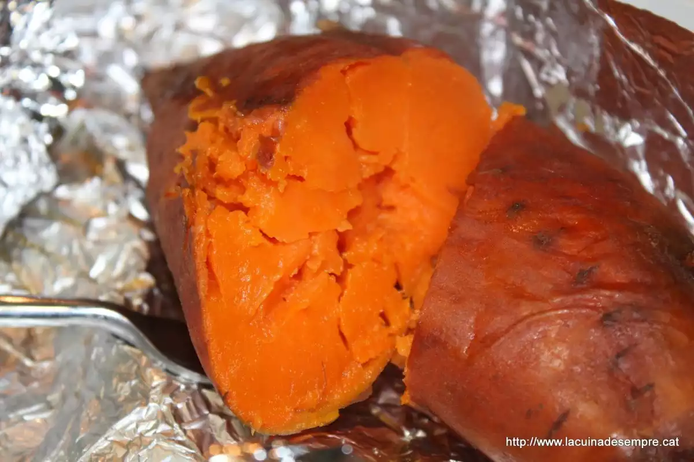
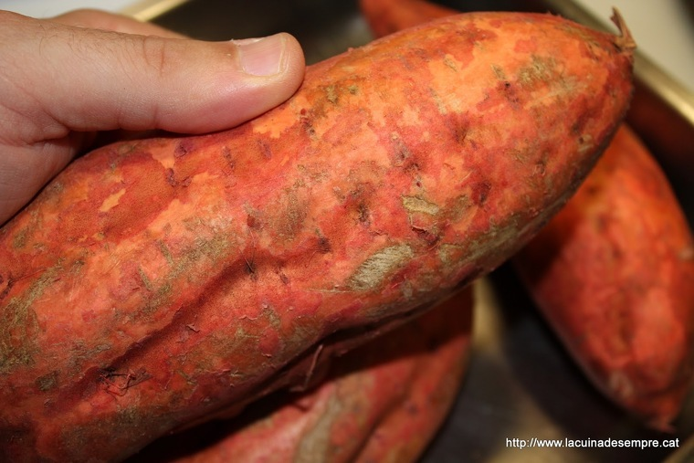
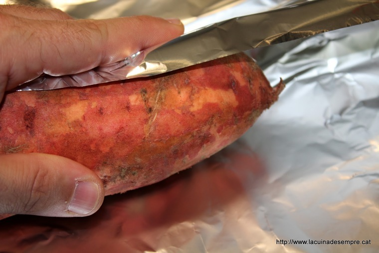
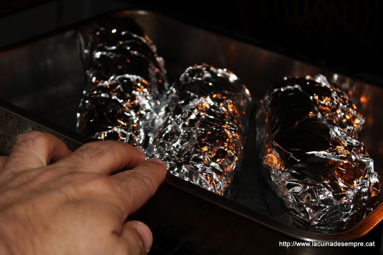

Com us he comentat amb l'entrada de les castanyes, aquesta entrada, més que una recepta, és un elogi a una de les elaboracions més tradicionals dels nostres país. El moniato al forn s'ha menjat tota la vida, juntament amb les castanyes torrades....i els panellets....i el moscatell o vi dolç...a que si?.
Doncs aquí us deixo quatre instruccions bàsiques per fer-los al forn. Tot i així, hi ha gent que els fa sense paper d'alumini....però jo penso que es couen més ràpid i es una bona forma de conservar-los a posteriori. Visca la Castanyada!!!
Jo tinc la mania de rentar-los una mica prèviament, per allò de les restes de terra o d'altres elements químics que puguin contenir. Sóc maniàtic, ho sé.
Ara els emboliquem, un a un, amb paper d'alumini.
I els enfornem a uns 220º graus....durant, aproximadament, 100-120 minuts. De tant en tant els intenteu aixafar amb una forquilla per comprovar si ja són cuits o no.
